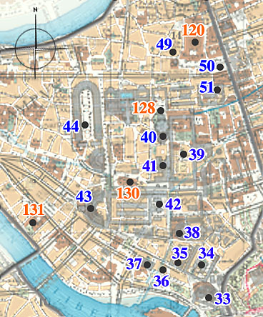

Rome map -
Campo Marzo

Campo Marzo
Campus Martius
33 Teatro di Marcello
Theatrum Marcelli
34 Portico di Ottavia
Porticus Octaviae
35 Portico di Filippo
Porticus Philippi
36 Circo Flaminio
Circus Flaminius
37 Anfiteatro di Statilio Tauro
Amphitheatrum Statilii Tauri
38 Teatro di Balbo
Theatrum Balbi
39 Septi Giuli
Saepta Iulia
40 Pantheon
Pantheon
41 Terme di Agrippa
Thermae Agrippae
42 Tempio di Giuturna, Area sacra di largo Argentina
Templum Iuturnae
43 Teatro di Pompeo
Theatrum Pompeii
44 Stadio di Domiziano (Piazza Navona)
Stadium Domitiani
45 Ponte Trionfale
Pons Triumphalis
46 Mausoleo di Adriano (Castel sant'Angelo)
Mausoleum Hadriani
47 Ponte S. Angelo
Pons Aelius (Pons Hadrianus)
48 Mausoleo di Augusto
Mausoleum Augusti
49 Colonna di Antonino Pio
Columna Antonii Pii
50 Colonna di Marco Aurelio
Columna Marci Aurelii Antonini
51 Tempio del divo Adriano
Hadrianeum
120 Curia Innocenziana (Palazzo di Montecitorio)
128 Piazza di Rotonda
130 Palazzo Stoppani (Palazzo Vindoni Caffarelli)
131 Palazzo Farnese